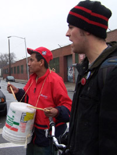

Submitted on Mon, 01/14/2008 - 2:43pm
Disclaimer - this campaign is not an official campaign of the IWW nor is this report confirmed.
December 17, 2007
300 troquer@s based in South Gate and Mira Loma went on strike against HUDD et al.
These workers were mostly young latino migrants with a very visible
participation of women truck drivers. Most of them had been in the
harbor about 5 years with maybe as few as 10% going back to the CWA
days of 1996 and only a handful that were present during the 1980s.
HUDD
Submitted on Thu, 01/10/2008 - 3:17pm
 By KRIS MAHER, Wall Street Journal - January 9, 2008
By KRIS MAHER, Wall Street Journal - January 9, 2008
A series of emails by Starbucks Corp. managers sheds light on the
company's efforts to thwart union organizing among its baristas.
The emails, which are part of a labor-dispute proceeding in New York
and were reviewed by The Wall Street Journal, open a rare window onto
the company's labor relations practices. Labor experts not involved
with the case said the activity is not illegal. But the emails could
prove embarrassing because they show managers using various methods to
identify pro-union employees.
Submitted on Thu, 01/10/2008 - 2:31pm
January 7th saw the return of MPs to the UK Parliament. It also saw the IWW co-ordinate an international phone blockade. Wobblies chose to celebrate the occasion by sending a message to the Health Minister -Alan Johnson - that cuts to the National Blood Service are notacceptable. Phones were tied up all day as campaigners and supporters from as far afield as Poland, Canada, and the United States, as well as hundreds from around the UK, took part. The IWW in the UK has an active and growing job branch in an NBS processing centre. The action took place ahead of the NHSBT Board meeting on the 10th, where bosses have met to take stock of the management review into their cuts plans.
Submitted on Fri, 01/04/2008 - 5:06pm

By Beth Bar - 01-02-2008, New York Law Journal
A Manhattan federal judge has ordered a New York City
seafood purveyor not to retaliate against workers who
are suing the company for allegedly violating state
and federal labor laws.
Southern District Judge Louis L. Stanton has issued a
preliminary injunction against Wild Edibles, a
wholesale and retail chain that has been featured on
"The Martha Stewart Show" and on the Food Network. The
judge prohibited the company from taking any "adverse
employment action against, or terminating the
employment of" any worker who decides to be part of
the suit.
Submitted on Tue, 01/01/2008 - 4:00pm
 On Friday, December 21st, around a dozen area IWW members,
overwhelmingly Starbucks Baristas, gathered outside of 1 of around 4
Dupont Circle Starbucks, braving the harsh winter elements in favor of
abolishing the wage system. Their mission: reveal the Starbucks PR
facade for what it is. Starbucks talks the social responsibility talk
but they employ fewer with healthcare than even Walmart, so often the
target of liberal scorn. A union members words are pertinent:
On Friday, December 21st, around a dozen area IWW members,
overwhelmingly Starbucks Baristas, gathered outside of 1 of around 4
Dupont Circle Starbucks, braving the harsh winter elements in favor of
abolishing the wage system. Their mission: reveal the Starbucks PR
facade for what it is. Starbucks talks the social responsibility talk
but they employ fewer with healthcare than even Walmart, so often the
target of liberal scorn. A union members words are pertinent:
"I'm a mother of four and my Starbucks wage puts me well below the poverty line,"